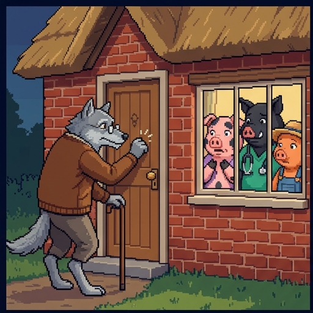
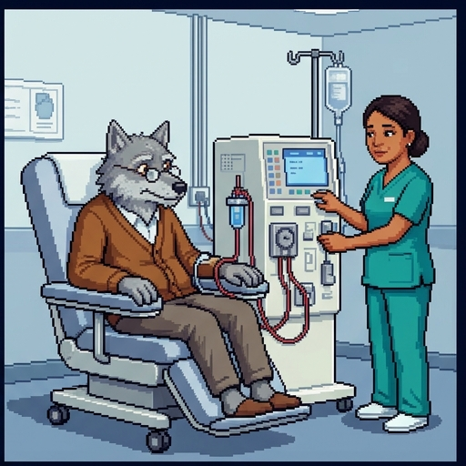
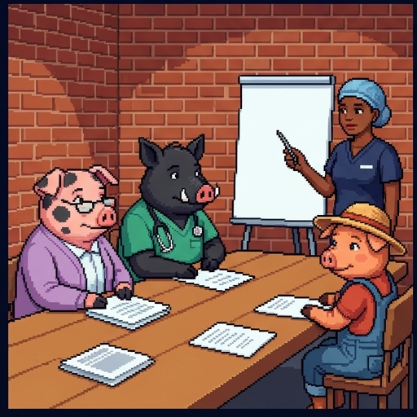
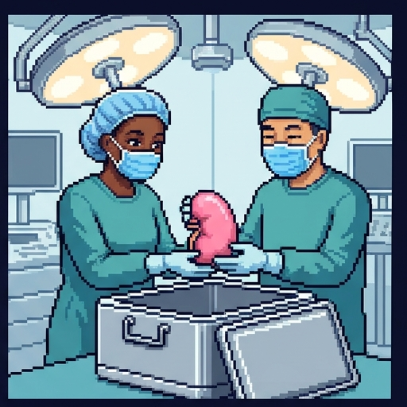
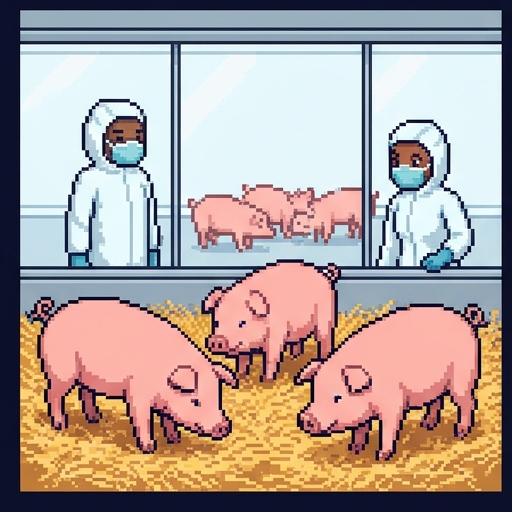
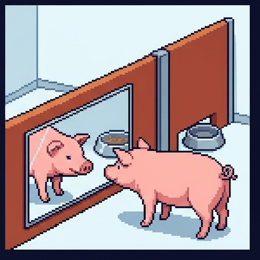
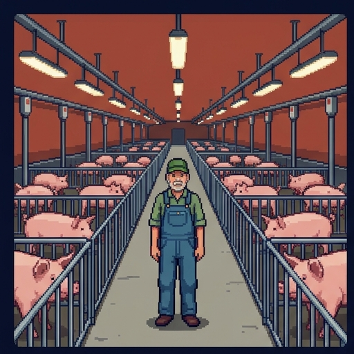
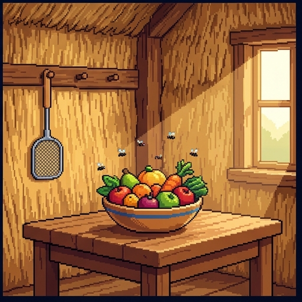
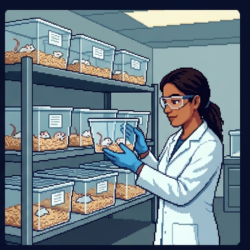

The Wolf at the Door
The Big Bad Wolf is back at the brick house. This time he isn't huffing or puffing. He's asking for help.
He's old, his kidneys are failing, and a new trial could give him a kidney from a pig. May we use pigs to save lives?
Use → (or Next) to advance and reveal points. F = fullscreen.
Welcome to The Wolf at the Door. The Big Bad Wolf is back at the brick house. This time he isn't huffing or puffing. He's asking for help. He's old, his kidneys are failing, and a new trial could give him a kidney from a pig. May we use pigs to save lives? Whenever it's your turn, I'll stop and wait for you.
Where You Stand Now
Rate each statement. There are no right answers, and you'll rate them again at the end.
It's acceptable to use pig organs to save human lives.
Eating pork is morally acceptable.
Some animals have rights, as people do.
Medical research on animals is worth the suffering it causes.
A fly's life matters morally.
Here's where you stand now. Rate each of these five statements by how much you agree. There are no right answers, and you'll rate them again at the end. When you've rated all five, press Submit.
Saved. You'll come back to these at the end.

The Wolf's Request
Here's the Wolf's request. First, a note: the pigs, the Wolf, and the hospital are invented. The medicine is real.
- Years after the huffing and puffing, the Big Bad Wolf is old, and his kidneys are failing. He spends three mornings a week on dialysis.
- The county hospital is running a trial of kidneys from gene-edited pigs. Dr. Amara Osei, the transplant surgeon, thinks he qualifies.
- The hospital's ethics committee must approve the trial. Its chair is Hettie, the pig from the brick house, and her brother Barnaby and sister Clover sit on it too.
- So the Wolf comes to the brick house, and knocks.
The pigs, the Wolf, and the hospital are invented. The medicine is real.

Decision Point: The Committee Votes
Yes. A life is at stake.
Yes, with strict rules on how the pigs are raised.
No. Pigs shouldn't be used this way.
Not until we know whether it works.
A first decision point. Should the committee approve the pig-kidney trial? This one isn't graded. Pick the answer closest to your view, and read its note.
You'll vote again at the end, after meeting three philosophers who answer this very differently.
The Waitlist
Why pigs? Start with the people waiting for organs.
- About 110,000 people in the US are waiting for an organ. About 86% of them need a kidney.
- About 12 to 13 people die each day while waiting.
- Dialysis can keep kidney patients alive, but a transplant usually gives a longer and better life.
- Pigs are bred in large numbers, and their organs are close to human size. So researchers have spent decades trying to make pig organs work in people.

Pig Organs So Far
Here's what pig organs have done in living patients so far.
- Two men received pig hearts in Maryland, in 2022 and 2023. Both died within about two months.
- Since 2024, at least eight living Americans have received pig kidneys. Some died, several kidneys were removed, and two recipients later got human kidneys.
- The longest published case: Tim Andrews lived 271 days, about nine months, off dialysis with a pig kidney, then received a human kidney in January 2026.
- In 2025 the FDA cleared the first formal pig-kidney trials. One began that November. Another is expected to start in 2027.

Making a Donor Pig
So how do you make a pig whose kidney a person can keep?
- Donor pigs carry up to 69 gene edits. Some remove pig genes whose products the human immune system attacks; others add human genes or disable viruses hidden in pig DNA.
- They are born by caesarean section into sealed, pathogen-free barns, and screened for viruses.
- The infection worry: a pig virus could cross into a patient on immune-suppressing drugs, then spread. A hidden pig virus was found in the first pig heart.
- Some ethicists warn that pathogen-free life means separation from their mothers at birth and isolated, barren housing for social animals. Others argue strict welfare standards can be met.

Do Pigs Count?
Before asking whether we may use pigs, ask whether pigs count at all.
- In 1789 Jeremy Bentham wrote that “the question is not, Can they reason? nor, Can they talk? but, Can they suffer?”
- Pigs can. They feel pain and fear, and a 2015 review calls the research findings “suggestive of complex psychology.”
- They remember, solve mazes, and learn from other pigs. In one study, pigs used a mirror to find hidden food, though a later study failed to repeat that result.
- So the question isn't whether pigs count. It's how much, and what that rules out.
Fill In the Gaps
1. Most people on the US organ waitlist need a
kidney.
2. Donor pigs are
gene-edited so the human body is less likely to reject their organs.
3. As of October 2026, pig kidneys in living patients have worked for
weeks or months.
4. Bentham asked not whether animals can reason or talk, but whether they can
suffer.
Time to check what you've learned. Fill in each gap by choosing an option, then press Check.
Right. Pig kidneys have worked for weeks or months so far, and Bentham's question was whether animals can suffer.
Equal suffering counts equally, whoever feels it.
Answer One: Weigh the Interests
The first answer: weigh the interests.
- The philosopher Peter Singer holds that equal suffering counts equally, whoever feels it. He calls this equal consideration of interests.
- So using animals is justified only if the benefits outweigh all the suffering it causes, the animals' suffering counted equally.
- Favoring our own species just because it's ours, he calls speciesism.
Singer's Test
Singer offers a test for any experiment on animals.
- In a 1974 essay, he asks: “Would the experimenter be prepared to perform his experiment on an orphaned human infant, if that were the only way to save many lives?”
- If not, he argues, the readiness to use animals instead is “simple discrimination”: speciesism.
- He allows that an experiment could reduce suffering so much that it would be permissible. But he opposes animal research as it is usually practiced.
- Tom Regan replies that adding up harms this way can justify sacrificing an individual for the greater good.
Some animals have rights, and may never be used as mere resources.
Answer Two: Rights
The second answer: rights.
- The philosopher Tom Regan holds that any subject-of-a-life has inherent value: a being with beliefs, desires, memory, and a sense of its own future.
- Being a subject-of-a-life is enough for rights, he says. He doesn't say it's required.
- A being with rights may never be treated merely as a resource, however great the benefit to others.
- So he calls for an end to harmful research on such animals. Justice demands not “larger, cleaner cages,” he writes in a later pamphlet, but “empty cages.”
Questions for the Rights View
Here are two questions for the rights view.
- The cost. Carl Cohen argues that treating animals' rights as trumps would block much valuable research, or shift its risks onto human subjects.
- The lifeboat. Four people and a dog are in a lifeboat that holds four. Regan says it would not be wrong to throw the dog overboard, since death harms each human more, and not wrong even for “a million dogs.”
- Singer replies that Regan then “cannot consistently deny that we should experiment on a diseased dog to save diseased humans.”
- Regan's answer: lab animals “are coercively placed at risk of harm, risks they would not otherwise run, so that others might benefit.” The dog was already in danger.
Rights belong to beings who can make moral claims on each other.
Answer Three: The Moral Community
The third answer: the moral community.
- The philosopher Carl Cohen holds that rights arise only among beings who can make moral claims on each other, and recognize claims made on them.
- Animals lack this capacity for free moral judgment, so they have no rights. But we still have obligations to them: “we are at least obliged to act humanely.”
- He accepts the label: “I am a speciesist.” The differences between species, he argues, are morally relevant, and ignoring them leads people astray.
- He favors alternatives where they give the same result. But he argues for more animal research, not less, to avoid using humans as experimental subjects.
The Talking Pigs
Now look at the story again.
- Hettie can make moral claims on others and honor theirs: she keeps promises and owns up to her duties. The pigs in the hospital's barn can't.
- For Cohen, what matters isn't talking or reasoning but the capacity for moral claims. Rights belong to beings with it, and to every member of a kind that normally has it.
- Hettie qualifies. The barn pigs, like ordinary pigs generally, are owed humane treatment but have no rights.
- Singer would look at what the barn pigs can feel, and Regan at whether each is a subject-of-a-life. For both, Hettie's capacity for moral claims isn't what gives her standing.
Questions for the Moral Community View
Here's the main question for Cohen's view.
- Marginal cases. Infants, and people with severe cognitive disabilities, can't make moral claims either.
- Regan argues that if they have rights, so do animals like them. Singer argues that we may not do to animals what we'd refuse to do to humans with similar capacities.
- Cohen's reply: “The issue is one of kind.” Every human has rights, since “what humans retain when disabled, animals have never had.”
- The philosophers James Rachels and Jeff McMahan reply that an individual should be treated by its own capacities, not by what's normal for its kind.
Which View?
Singer: weigh the interests
Regan: rights
Cohen: the moral community
"Count the pig's suffering as much as anyone's, and approve the trial only if the good it does outweighs it."
"We wouldn't run this on an orphaned infant to save lives. Running it on the pig instead is speciesism."
"The pig has inherent value. It may not be used as a resource, however much good it would do."
"Kinder barns aren't enough. The goal is to stop using the pigs at all."
"Treat the barn pigs humanely, but they don't have rights the way Hettie does."
"A newborn can't make moral claims yet, but she belongs to a kind that can, so she has rights."
Which view? Each line is said at the committee. Sort each one under Singer, Regan, or Cohen. When every line is placed, press Check answers.
Right. Singer weighs the interests, Regan defends rights, and Cohen limits rights to the moral community.

Dial One: What's Gained?
Every use of a pig can be set on two dials. Dial one: what's gained?
- The US slaughtered about 128 million pigs for food in 2025, and about 1.5 billion a year worldwide. Dale Hargrove's farm sends pigs to market every week.
- Cohen: “One cannot coherently object to the killing of animals in biomedical investigations while continuing to eat them.”
- On Singer's view, the two uses can come apart. A life saved may outweigh a pig's suffering. A meal, set against a factory-farmed pig's suffering, doesn't.
- On Regan's view, both are wrong: either way, the pig is used as a resource. On Cohen's, neither violates a right, though both owe the pig humane treatment.
Decision Point: Kidney or Pork Chop?
The kidney. A life is worth more than a meal.
The pork chop. Donor pigs live more deprived lives than pigs on good farms.
Both are fine, if the pigs are treated well.
Neither. The pig is used either way.
Another decision point. Which is easier to justify: using a pig for a kidney, or for a pork chop? This one isn't graded. Pick the answer closest to your view, and read its note.
Many people find the kidney easier to justify, because far more is gained. Singer's view explains that. Regan's says the pig is used either way.

Dial Two: Who Pays?
Dial two: who pays? Clover's straw house is full of fruit flies. Do they count too?
- Flies clearly detect and avoid harm. Whether they feel pain is uncertain.
- A 2022 review found that adult flies meet most criteria for pain, which it counts as “strong evidence.” Skeptics say we can't yet detect the felt part.
- Even if flies feel something, most views give them a much weaker claim than a pig: far simpler lives, with far fewer interests at stake.
- Singer once drew his line “somewhere between a shrimp and an oyster,” and has gone back and forth on it. UK law (2022) covers octopuses and crabs, but not insects.
Flies in the Lab
Flies matter in the lab, too.
- Dr. Ravi Menon runs the hospital's fruit-fly lab. Flies have been studied in genetics since about 1910, and fly research has earned at least five Nobel Prizes.
- In a 2001 study, about three-quarters of the human disease genes searched had a fly counterpart.
- Britain's center for research alternatives counts swapping mice for flies as partial replacement: on current scientific thinking, flies are “not considered capable of experiencing suffering.”
- The philosopher Jonathan Birch is less sure. Adult insects are realistic candidates for sentience, he argues, so fly labs must at least ask what precautions are proportionate.
Try It: Two Dials
Now try it yourself. Here are four cases, each set on the two dials: what's gained, and who pays. Pick each case and compare how the three views rule on it. When you've seen all four, press Continue.
Reading the Dials
On Singer's view, a pig-kidney trial could be justified even if eating factory-farmed pork is not.
On Regan's view, using a pig for a kidney and for a pork chop are both wrong.
Cohen holds that animals have no rights, but that we owe them humane treatment.
On Regan's view, gentler treatment of the donor pigs would make the trial acceptable.
On Singer's view, any benefit to humans outweighs an animal's suffering.
Cohen holds that we owe animals nothing at all.
Reading the dials. Check every statement that is true, as this lesson presents it. Then press Check answers.
Right. Singer reads both dials, Regan reads who pays, and Cohen's rights read neither, though humane treatment still counts.

Who Oversees the Lab?
Whatever the philosophers say, here's how US labs are actually overseen.
- The Animal Welfare Act covers pigs, dogs, and monkeys. It leaves out mice and rats bred for research, and all insects.
- But federally funded labs must also follow a policy that covers every live vertebrate, mice included.
- Studies under either rule need approval from an animal care committee, an IACUC. Research on people goes to a different committee, an IRB.
- One estimate puts mice and rats at over 99% of US lab mammals, about 111 million a year.
Replace, reduce, and refine the use of animals in science.
The 3Rs
The rules labs work by come from a 1959 book by the zoologist William Russell and the microbiologist Rex Burch.
- Replace: use methods without animals, such as cells or computer models, or, as partial replacement, animals that current guidance doesn't consider able to suffer, such as fruit flies.
- Reduce: get the same answer from fewer animals.
- Refine: make what's done to the animals that are used less painful and distressing.
- A change counts only if the science stays sound. Dropping a control group, for example, saves animals but leaves results nobody can trust.
The 3Rs don't say whether a study should happen at all. That's the question the three views answer.
Try It: The 3Rs Workshop
Now try it yourself. Here's an invented study: testing a new anti-rejection drug for pig-kidney transplants on sixty mice. Seven changes are proposed, one at a time. For each, decide which R it is, or whether it's not a 3R at all. When you've seen the new study, press Continue.
Which R?
Replace
Reduce
Refine
Not a 3R
Training surgeons on a lifelike simulator instead of on live pigs
Testing a drug's toxicity on liver cells grown in a dish instead of in rats
Scanning the same mice over time instead of using a new group for each time point
Measuring every animal, treated and control, before and after treatment, so fewer animals are needed in total
Training pigs with food rewards to stand still for blood draws, instead of restraining them
Ending the study for any animal that shows signs of severe illness
Dropping the control group to use fewer animals
Which R? Each change is proposed for a study. Sort each one under replace, reduce, refine, or not a 3R. When every line is placed, press Check answers.
Right. Replace swaps animals out, reduce uses fewer, refine makes it less painful, and nothing counts if the science stops being sound.
Moving Away From Animals
Labs are slowly moving away from animals. Here's where things stand.
- A 2022 law removed the federal law's requirement to test new drugs on animals before human trials. Other tests can now take their place.
- In 2025 the FDA began phasing down animal testing, starting with antibody drugs, and the NIH stopped issuing funding calls for research that uses only animals.
- The alternatives include organoids (tiny organs grown from human cells), organs on chips, and computer models.
- Animal studies are still allowed and still common. No dish yet captures a whole living body.
Fill In the Gaps
1. A federally funded mouse study must be approved by an
IACUC.
2. The Animal Welfare Act leaves out
mice and rats bred for research.
3. Federally funded labs must still follow a policy that covers every live
vertebrate.
4. The 2022 law
ended the requirement to test new drugs on animals before human trials.
Time to check what you've learned. Fill in each gap by choosing an option, then press Check.
Right. The 2022 law ended the requirement to test drugs on animals. It didn't ban animal testing.
Decision Point: The Committee Votes Again
Yes. A life is at stake.
Yes, with strict rules on how the pigs are raised.
No. Pigs shouldn't be used this way.
Not until we know whether it works.
One last decision point. Now that you've heard all three answers: should the committee approve the pig-kidney trial? This one isn't graded. Pick the answer closest to your view, and read its note.
Compare this with your first vote. Whichever way you've moved, the useful thing is being able to say which view your vote comes from.
Where You Stand Now
These are your ratings from the start. Rate each statement again.
These are your ratings from the start. Rate each statement again, then press Submit.
Saved. Now, a quick summary of the lesson.
Summed Up
Here's the lesson, summed up.
- As of October 2026, pig organs have worked in living patients for weeks or months, and formal trials have begun.
- Three answers: Singer weighs suffering equally, Regan forbids using a subject-of-a-life as a resource, and Cohen limits rights to the moral community.
- Two dials: what's gained (a life or a meal) and who pays (a pig or a fly). Singer reads both, Regan reads who pays, and Cohen's rights read neither.
- Inside the lab: the 3Rs say replace animals where possible, use fewer, and cause less suffering, all with sound science. They don't say whether a study should happen.
For Further Reading
If you'd like to go further, here are some good places to start, each with a note on why it's worth your time. Thanks for playing.
- Carl Cohen, “The Case for the Use of Animals in Biomedical Research,” New England Journal of Medicine 315, no. 14 (1986): 865–870. The moral community view, short and direct.
- Carl Cohen and Tom Regan, The Animal Rights Debate (Rowman & Littlefield, 2001). The two of them argue it out, each in his own words.
- Peter Singer, Animal Liberation Now (Harper, 2023). The updated edition of the book that started the modern debate, including its chapter on research.
- W. M. S. Russell and R. L. Burch, The Principles of Humane Experimental Technique (1959). Where the 3Rs come from.
- Jonathan Birch, The Edge of Sentience (Oxford University Press, 2024). How to act when we can't be sure a creature can feel. Free online.
About this lesson. Brendan Shea, PhD, wrote this lesson with help from AI tools. Claude (Anthropic) helped draft the text and code and check facts, and the illustrations were made with AI image generators. The narrator's voice is synthetic (Google Gemini text-to-speech). The author reviewed everything and is responsible for any errors.